第一章 新手入门：从开机到第一段 beat
先认识一下这个网站无痛感受节奏
这个网站是专门给零基础的人准备的。你不用先懂乐理，也不用会用电脑做音乐。我们想让你尽快上手、玩起来 MPC Sample，而不是坐在这儿读一本死板的说明书。这里有图、有一步一步的操作，也可以点着交互，边看边练。
刚开始学，大家通常会卡在三件事：
- 一是拍子和节奏。我们主要围绕 hip hop，这种音乐有很多特定的节奏风格，拍子打不稳，后面就不好玩儿。
- 二是机器本身怎么操作。键多、旋钮多、屏幕小，刚上手很容易不知道该按哪儿。
- 三是中文资料太少。网上能找到的，尤其是 YouTube 上，基本都是英文视频，看着费劲。
所以这个网站把三样东西放在一起：机器是什么、怎么用；采样、鼓组、节奏这些做音乐要用的知识；还有这两者怎么配合、怎么一块儿玩儿。
跟着步骤做，对着图看，就能边玩边学会。
本站由 DALIN朴 一人打造。想合作，请通过 GitHub 与我联系。
认识面板的 5 个区
40 多个键不用一次记住，先记 5 个区“各管什么”：
点图上任意一个彩色区域，直接跳到这个区的说明（颜色和下面 A–E 小标题一致）。
A看与听：音量 · 屏幕 · 喇叭
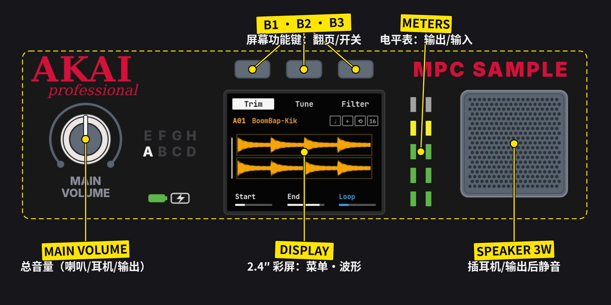
- MAIN VOLUME：总音量（喇叭、耳机、AUDIO OUT 都归它管）。
- 屏幕：2.4 英寸彩屏，1.4 节专门讲。
- 喇叭：3 W。新机喇叭上写着 REMOVE BEFORE USE 的是保护贴，可以撕掉。
新概念 ④ 功能键 B1–B3
屏幕上方的 3 个小键，没有固定功能。
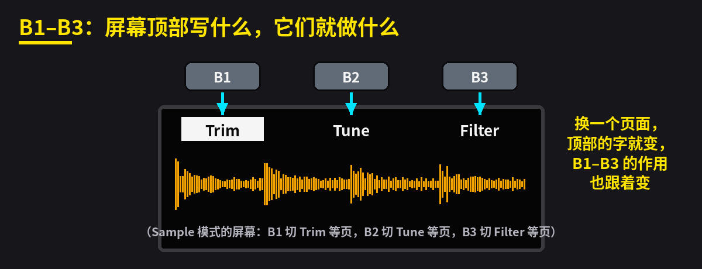
B切模式 · SHIFT · 推子
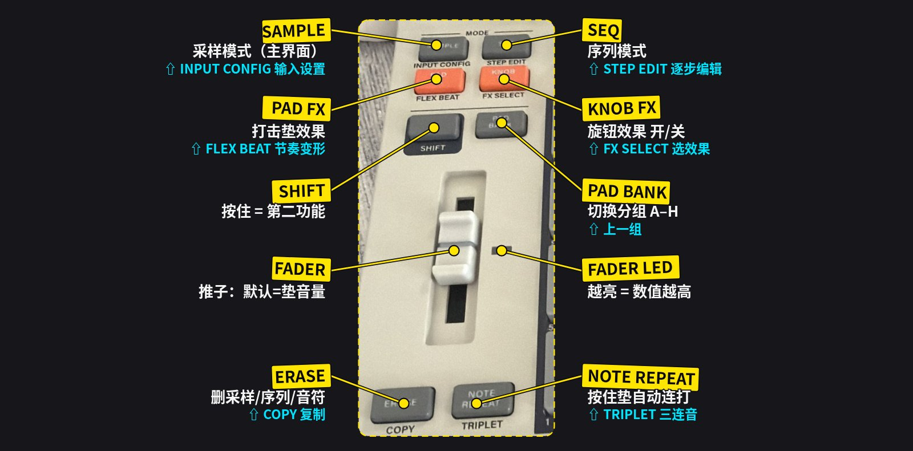
新概念 ⑤ 模式（Mode）
同样 16 个垫，在不同模式下作用不同。
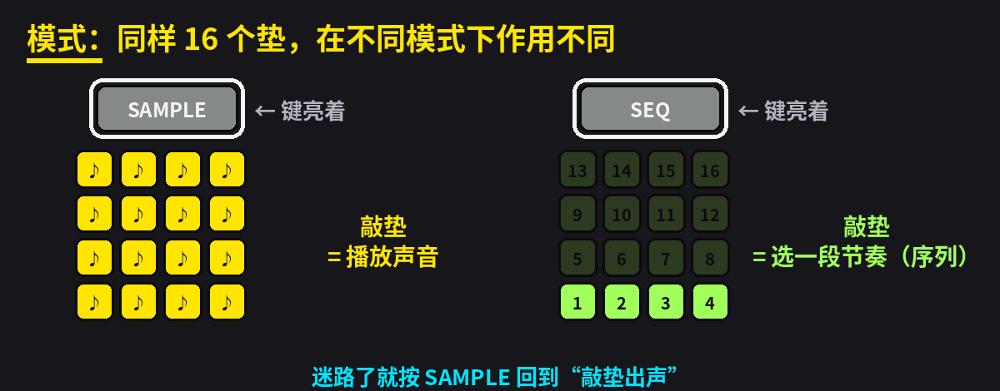
这一列还有 SHIFT（1.5 节）、PAD BANK（1.6 节）、效果键 PAD FX KNOB FX（1.12 节），和推子（上下推的滑块，默认调当前垫音量）。
C三个参数旋钮 K1–K3
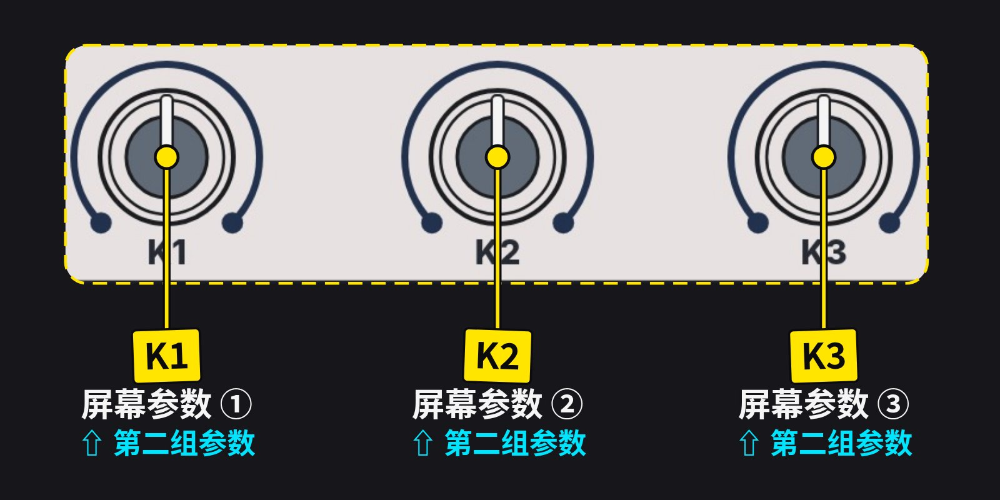
K1、K2、K3 调屏幕最下面一排的 3 个参数。屏幕写什么，它们就调什么。
新概念 ⑥ 绝对位置旋钮
旋钮（和推子）转到哪，数值就到哪。
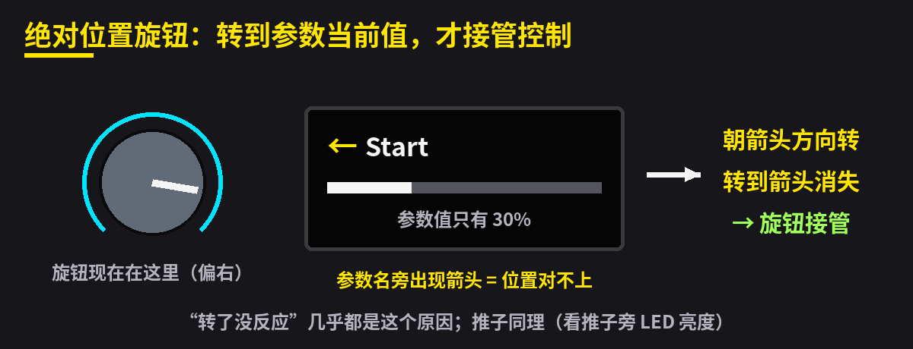
D工具 · 浏览 · 录音 · 播放
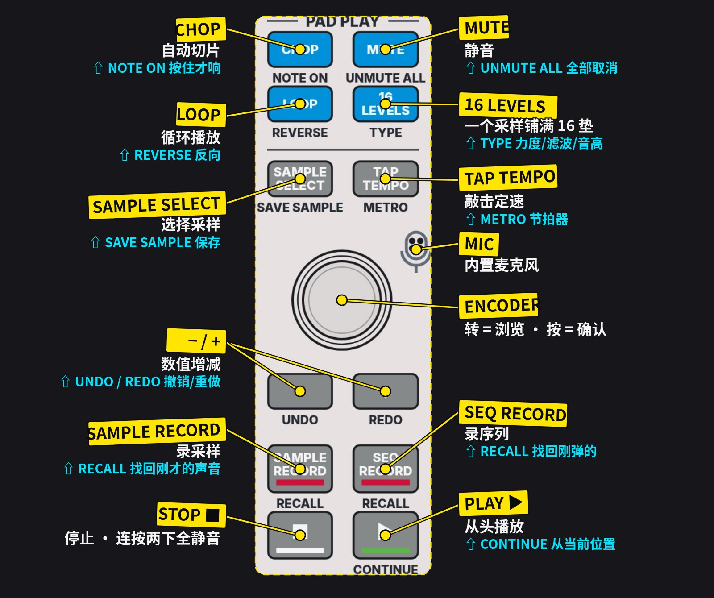
从下往上记：
- 播放：PLAY ▶ 从头放，STOP ■ 停（快速按两下 = 停掉所有声音）。
- 录音：SAMPLE RECORD 录声音，SEQ RECORD 录节奏。
- 导航：ENCODER 转 = 浏览 / 改值，按 = 确认；− + 减 / 加。旁边的小孔是内置麦克风。
- 工具：CHOP 切片、LOOP 循环、MUTE 静音、16 LEVELS、SAMPLE SELECT 选声音、TAP TEMPO 定速度。本章只用后两个。
E16 个打击垫
中间 4×4 的方块。能感应力度（敲得重声音大）和按住后的压力。编号在 1.6 节讲。
动手 4 · 找键游戏（1 分钟）
- 目标： 不看图，在机器上指出键在哪个区。
- 要做什么： 依次用手指点（不用按）：MAIN VOLUME（A）→ SAMPLE（B）→ K2（C）→ PLAY（D）→ PAD 1（E）→ ENCODER（D）→ SHIFT（B）。
- 你会发现： 播放 / 录音在右下，模式在左上，很有规律。
- 常见错误： 忽略 B1–B3，它们后面会常用。
先看一眼这些界面

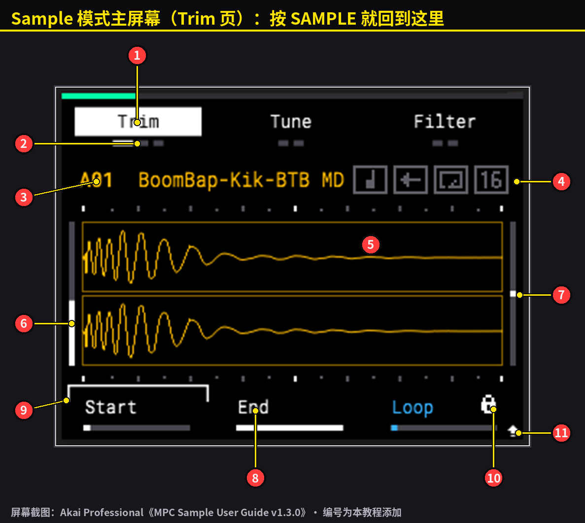
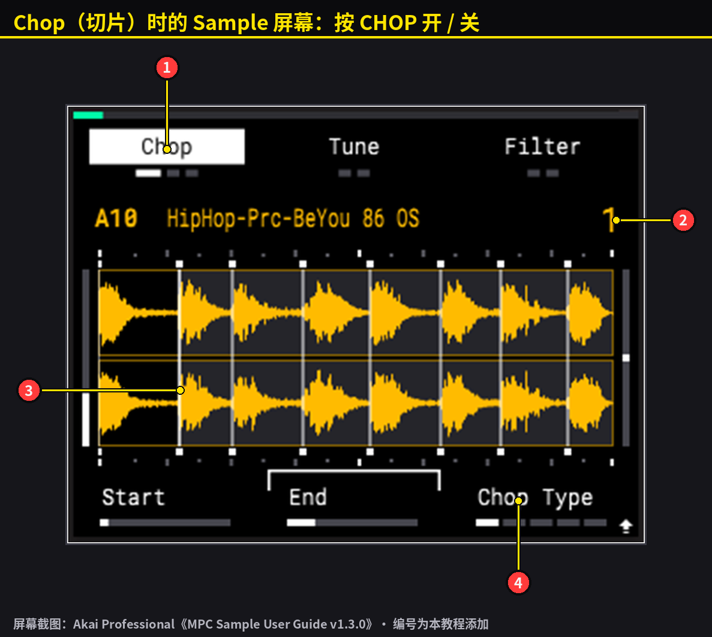
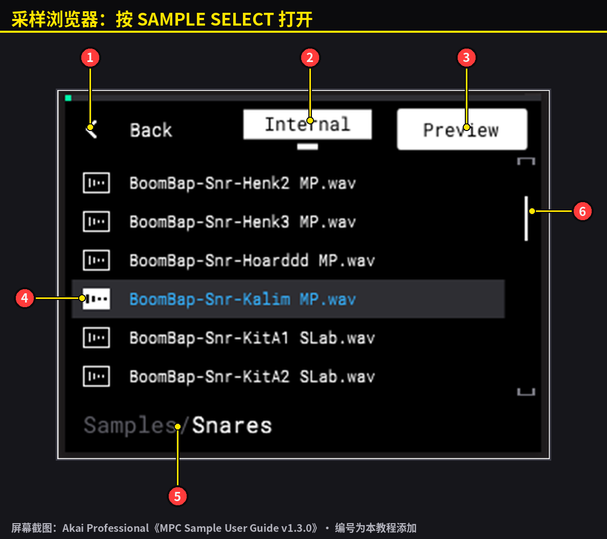
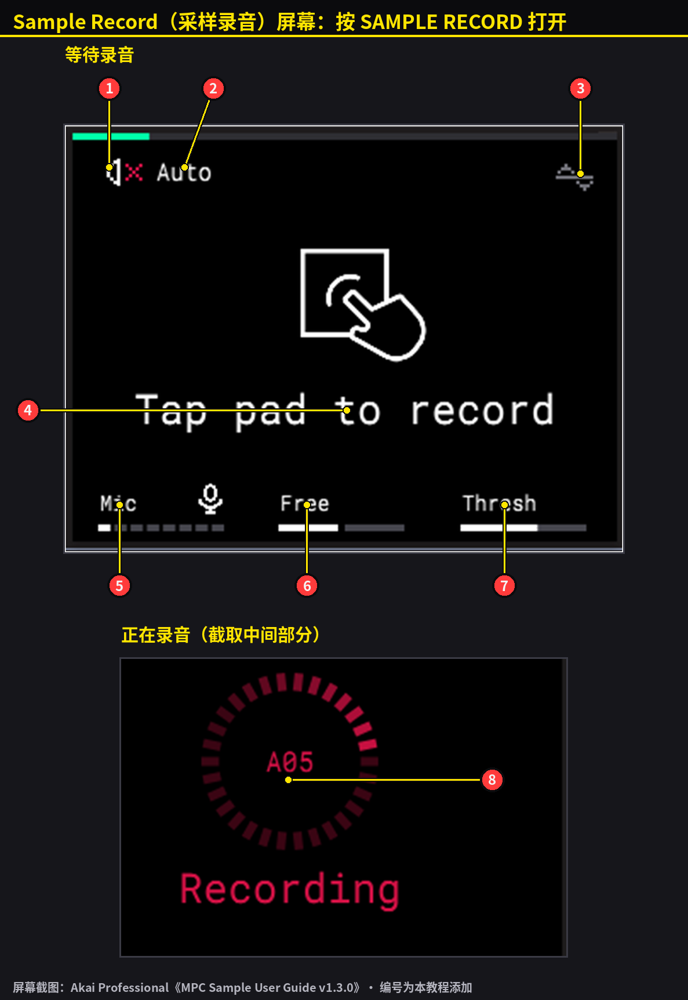
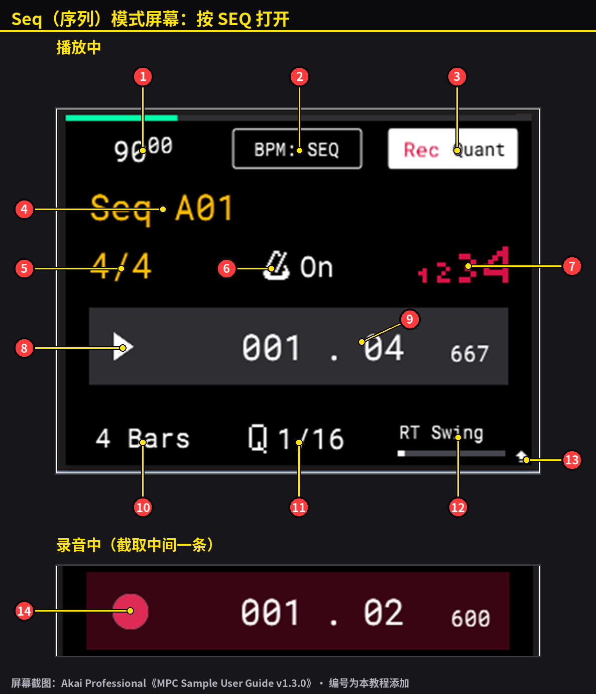
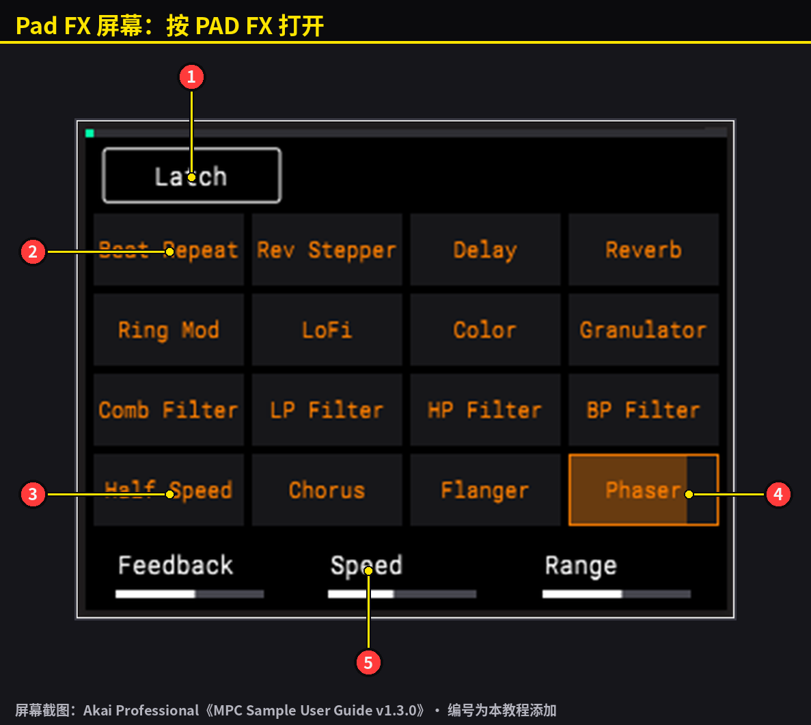
本章使用方法
写给从没碰过采样器的人，不用懂乐理，也不用电脑。
按键写法：PLAY = 按一下；SHIFT + PAD 16 = 先按住前一个再按后一个；PAD = 打击垫 1–16。
学习路线（每次 10–20 分钟）：
只想查某个键？去 第一章附录 · 功能速查（编号 1–40、全部屏幕参数、灯光含义）。
1.1 认识这台机器
新概念 ① 采样（Sample）
动词：把一段声音录下来。
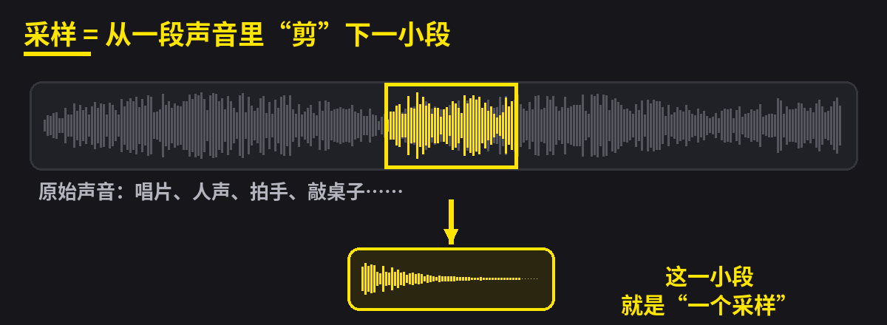
新概念 ② 采样器（Sampler）
能录声音、把声音放到键上、一敲就响的乐器。
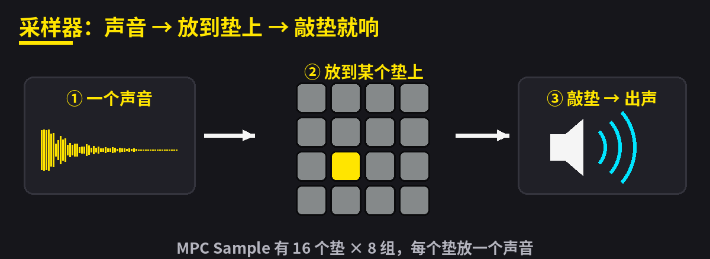
和手机 / 电脑做音乐比： 用手指敲垫（轻敲声小、重敲声大）；电池、喇叭、麦克风都在机器里，不接电脑也能用（也能用 USB-C 接电脑，属于进阶）。
MPC 系列从 1988 年的 MPC60 起就是 hip-hop 的经典工具。
用 MPC 做 beat，永远是这四步：
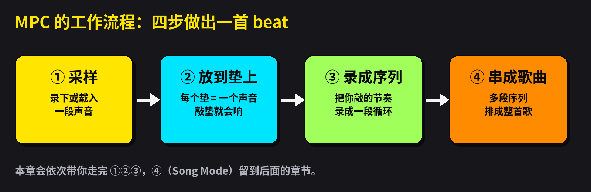
新概念 ③ 工程（Project）
你做的一切（声音 + 节奏 + 设置）打包在一起，叫一个工程，就像游戏存档。
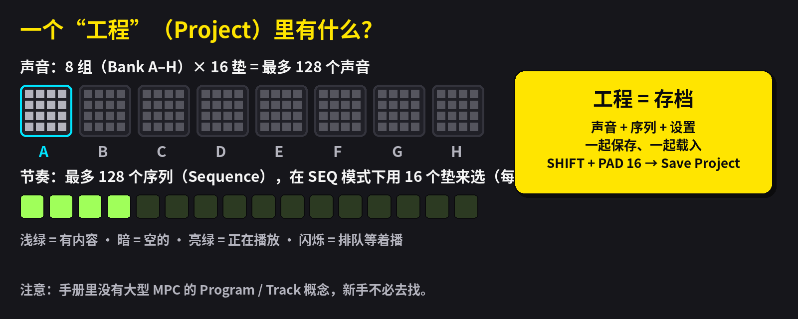
“组”和“序列”先不用记，1.6 和 1.9 节会讲。
鼠标移到图上的红色编号，看每个数字是什么意思。
1.2 开箱、充电、开关机、接耳机
盒子里有： 主机、USB-C 线、快速入门指南、安全与保修手册。
接口都在后面板，microSD 卡槽在左侧面：
SYNC OUT「5V 时钟脉冲」是什么？这里输出的不是声音，而是 5V 的时钟电信号（clock pulse）：按拍子发出一串很短的脉冲，用来让外面的模拟设备（比如老鼓机、模块合成器）跟着 MPC 的速度一起走。
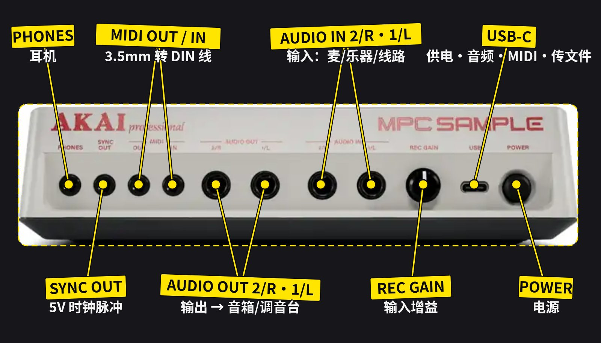
现在只认 3 个：POWER（电源）、USB-C（充电）、PHONES（3.5 mm 耳机孔）。其他接口后面再讲。
动手 1 · 充电
- 目标： 给电池充电。
- 要按什么： 用附带的 USB-C 线，把后面板 USB-C 接到充电头或充电宝。
- 你会看到： 顶面充电图标亮；充满或没接电时熄灭。电池图标颜色 = 剩余电量：绿 100–30% · 琥珀 29–15% · 红 14–5% · 红闪 = 不到 5%，马上充。
- 常见错误： 开着机充不进——视线材和电源，可能只在关机时充电。用附带线 + 5V 2A 最稳。满电约可连续播放 5 小时（官方 FAQ 写最长 6 小时）。
动手 2 · 开机 / 关机
- 目标： 开机，看到 demo。
- 要按什么： 按后面板 POWER；关机也按它。
- 你会看到： 屏幕亮起，自动载入 demo，按键和垫亮灯。
- 常见错误： 怕关机丢东西——机器会后台自动保存。想留有名字的存档，见 1.13 节。
动手 3 · 接耳机（可选）
- 目标： 用耳机听，不吵别人。
- 要按什么： 耳机插后面板 PHONES。音量仍用顶面 MAIN VOLUME。
- 你会听到： 声音从耳机出，内置喇叭自动关闭。
- 常见错误： 拔耳机前先调小音量。插着音箱线（AUDIO OUT）时喇叭也不响。
固件更新（可以玩熟了再做）：USB-C 接电脑、开机，浏览器打开 mpc-sample.local（不行试 192.168.155.1）；Windows 10 用 akaipro.com 的更新程序。官方演示：How to Update MPC Sample（43 秒）。
1.4 认识小屏幕：每个页面显示什么
屏幕只有 2.4 英寸，但信息很多。先记住三条规律，每个页面都适用：
- 最上面一排 = B1 B2 B3 的作用（从左到右）。
- 最下面一排 = K1 K2 K3 调的参数，下面的细条 = 当前数值。
- 右下角小箭头 ⇧ = 按住 SHIFT 还有另一组参数。
截图来自官方手册 v1.3.0，红色编号是本教程加的。
Sample 模式主屏幕（按 SAMPLE）
先在机器上找到 SAMPLE，点这张按键图 → 看按下后的小屏幕
鼠标移到图上的红色编号，看每个数字是什么意思。
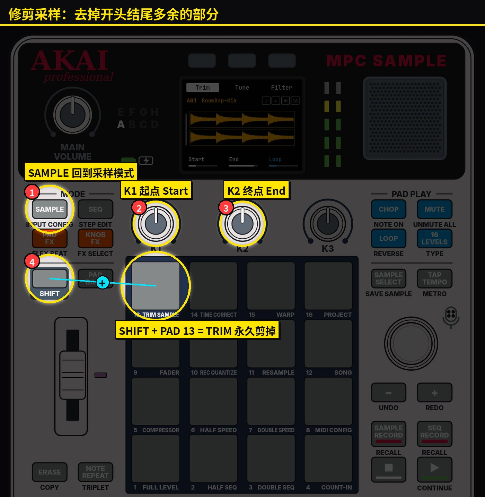
在机器上怎么进 Trim 页：按 SAMPLE，敲一下要看的垫；屏幕顶部 Trim 没有白底时按 B1（B1 轮换 Trim → Mix → Amp Env），回到 Trim。这时 K1 调起点、K2 调终点（出处：本教程 1.4 动手 5、1.11 修剪步骤，及附录 Sample Mode 表“B1 → Trim”，依据手册 v1.3.0）。
垫被静音时，波形变灰、敲了不响。
Chop 切片时（Sample 模式下按 CHOP）
先在机器上找到 CHOP，点这张按键图 → 看按下后的小屏幕
切片编辑不能撤销，第四章细讲。
采样浏览器（按 SAMPLE SELECT）
先在机器上找到 SAMPLE SELECT，点这张按键图 → 看按下后的小屏幕
采样录音（按 SAMPLE RECORD）
先在机器上找到 SAMPLE RECORD，点这张按键图 → 看按下后的小屏幕
Seq 序列模式（按 SEQ）
先在机器上找到 SEQ，点这张按键图 → 看按下后的小屏幕
Pad FX（按 PAD FX）
先在机器上找到 PAD FX，点这张按键图 → 看按下后的小屏幕
Knob FX（按 KNOB FX；选效果按 SHIFT + KNOB FX）
先在机器上找到 KNOB FX，点这张按键图 → 看按下后的小屏幕
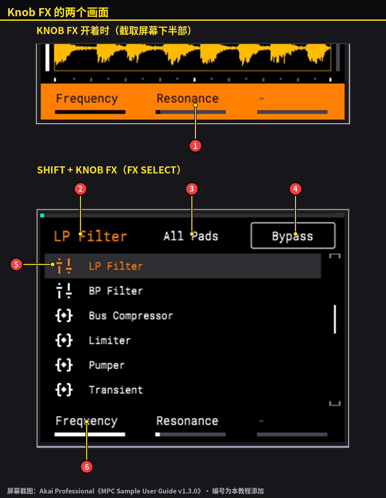
在这一页敲垫，可以选哪些垫受影响（亮 = 受影响）。
Song 歌曲页（SHIFT + PAD 12）
把几段序列排成一首歌（本章不用，先认个脸）。
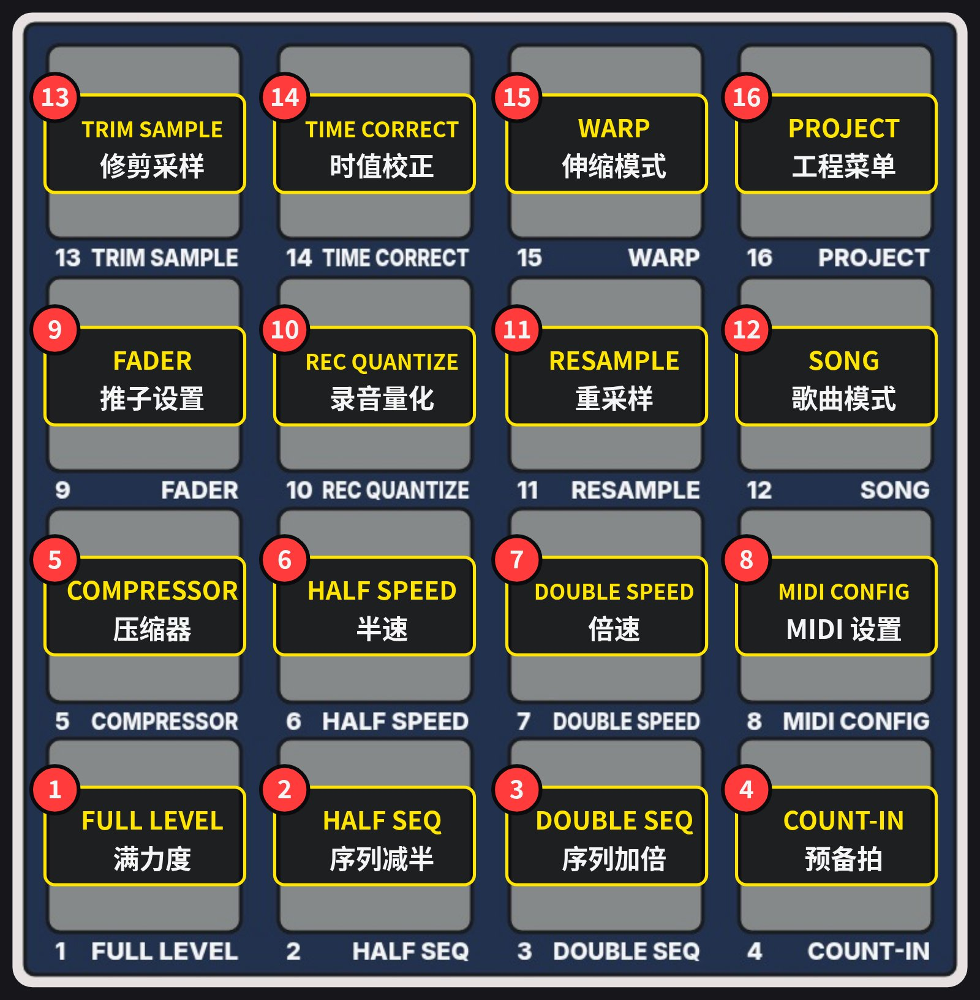
先在机器上找到 SHIFT + PAD 12，点这张按键图 → 看按下后的小屏幕
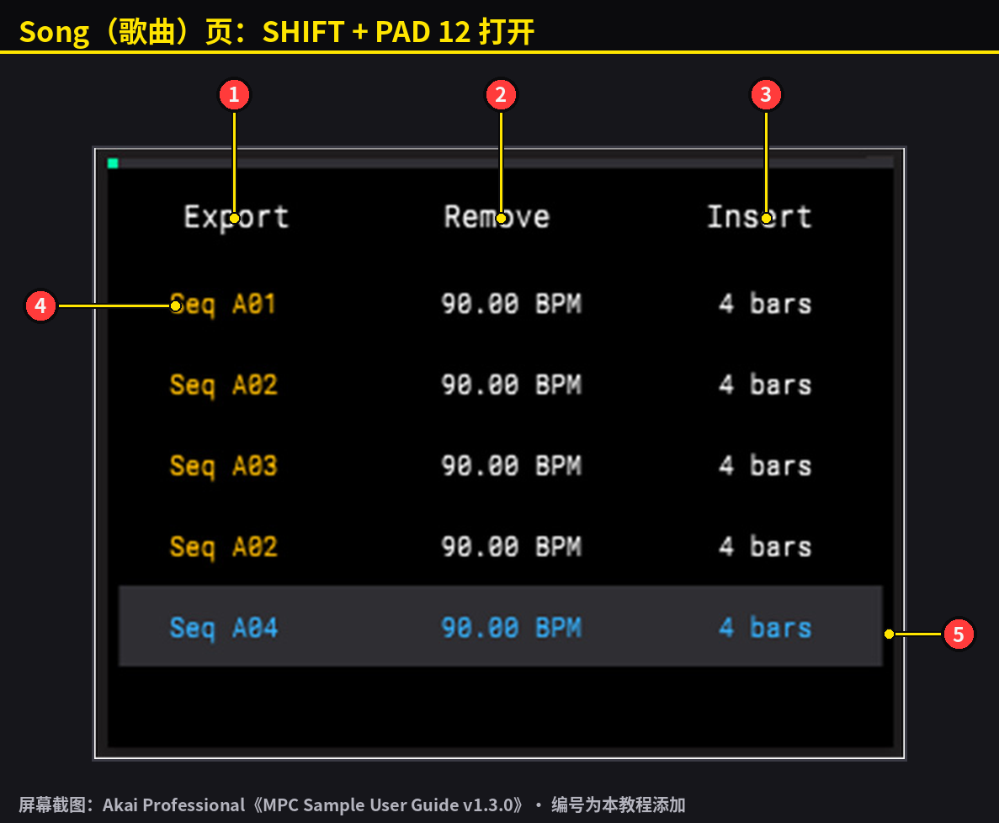
Project 菜单与起名页（SHIFT + PAD 16）
先在机器上找到 SHIFT + PAD 16，点这张按键图 → 看按下后的小屏幕
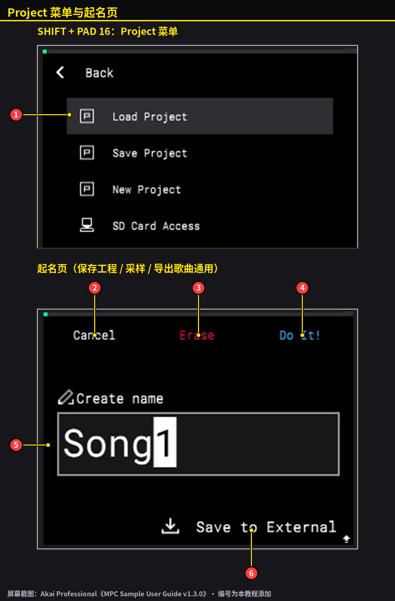
保存工程、保存采样、导出歌曲都用这个起名页。
其他页面
先在机器上找到 SHIFT + 对应 PAD，点这张按键图 → 看按下后的小屏幕
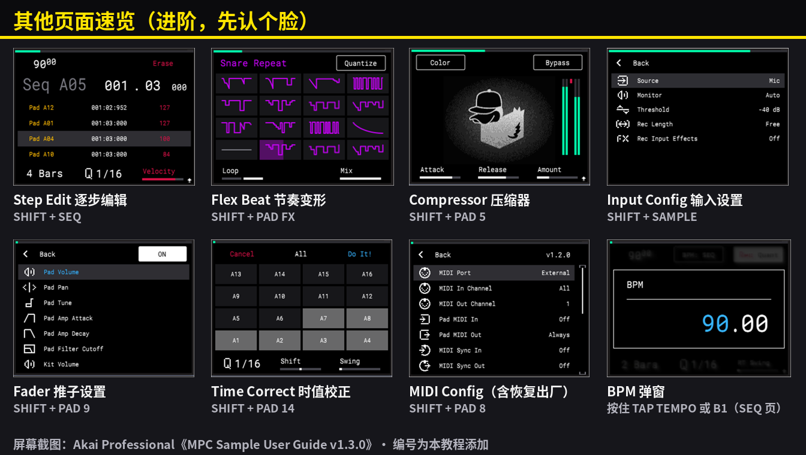
MPC Sample 没有叫 Settings 的总设置页，设置分在几个 SHIFT 菜单里：Input Config、Fader、Time Correct、MIDI Config（恢复出厂也在这里）。
动手 5 · 翻翻页面
- 目标： 看懂“上排 = B1–B3、下排 = K1–K3”。
- 要按什么： SAMPLE → 敲 PAD 1 → 按 B1 三次，看 Trim → Mix → Amp Env；再按 SEQ，找到 BPM、序列名、1234 图标。
- 你会看到： 每按一次 B1，顶部标签和下排参数一起变。
- 常见错误： 在 Mix / Amp Env 页转 K1 却想调起点——先按 B1 回到 Trim。
1.5 SHIFT 与第二功能
新概念 ⑦ 第二功能（SHIFT 功能）
键和垫下方印的小字（如 PAD 16 下的 PROJECT）是第二功能：按住 SHIFT 再按才触发，像电脑上 Shift + 数字打符号。
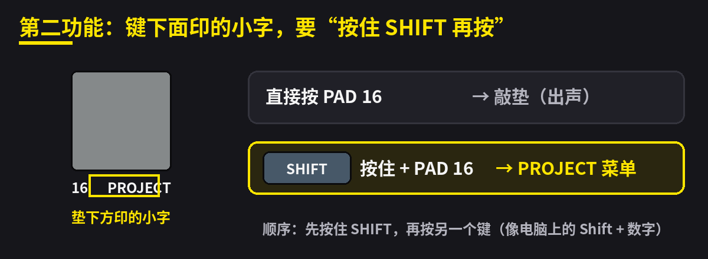
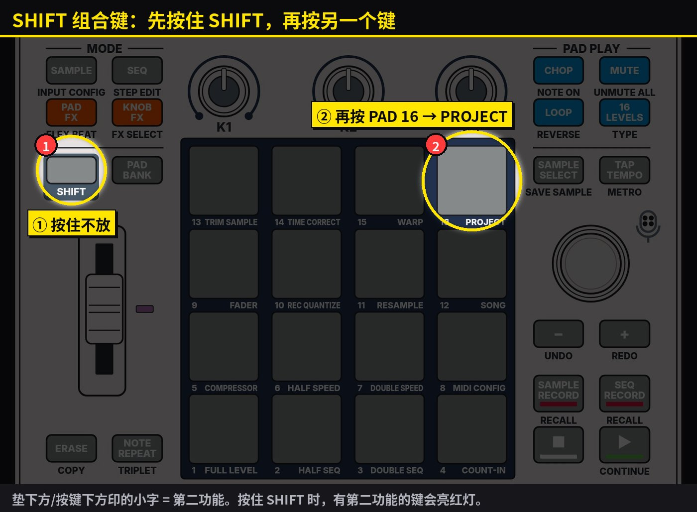
动手 6 · 看看哪些键有第二功能
- 目标： 学会“按住 SHIFT”。
- 要按什么： 按住 SHIFT 不放，看面板；再同时按 PAD 16，然后松开。
- 你会看到： 按住 SHIFT 时，有第二功能的键亮红灯；按 PAD 16 后屏幕打开 Project 菜单。看一眼，按 SAMPLE 退出。
- 常见错误： 顺序反了只是敲了一下垫。先按住 SHIFT。
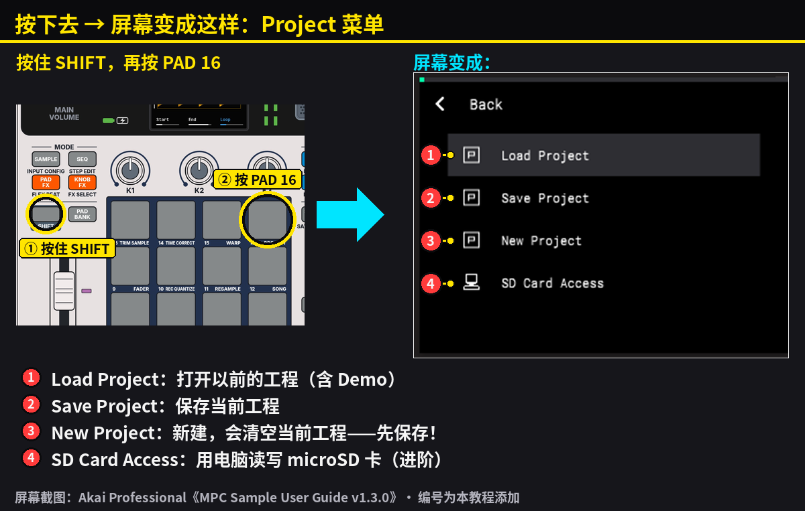
本章用到这几个（全部见 速查）：
| 组合 | 作用 | 用在 |
|---|---|---|
| SHIFT + PAD 4 | COUNT-IN 预备拍 开/关 | 1.10 |
| SHIFT + PAD 10 | REC QUANTIZE 录音量化 开/关 | 1.10 |
| SHIFT + PAD 13 | TRIM SAMPLE 永久剪掉首尾 | 1.11 |
| SHIFT + PAD 16 | PROJECT 工程菜单（载入 / 保存 / 新建） | 1.13 |
| SHIFT + TAP TEMPO | METRO 节拍器 Off / On / Record | 1.10 |
| SHIFT + − / + | UNDO 撤销 / REDO 重做 | 随时 |
1.6 打击垫与 Bank
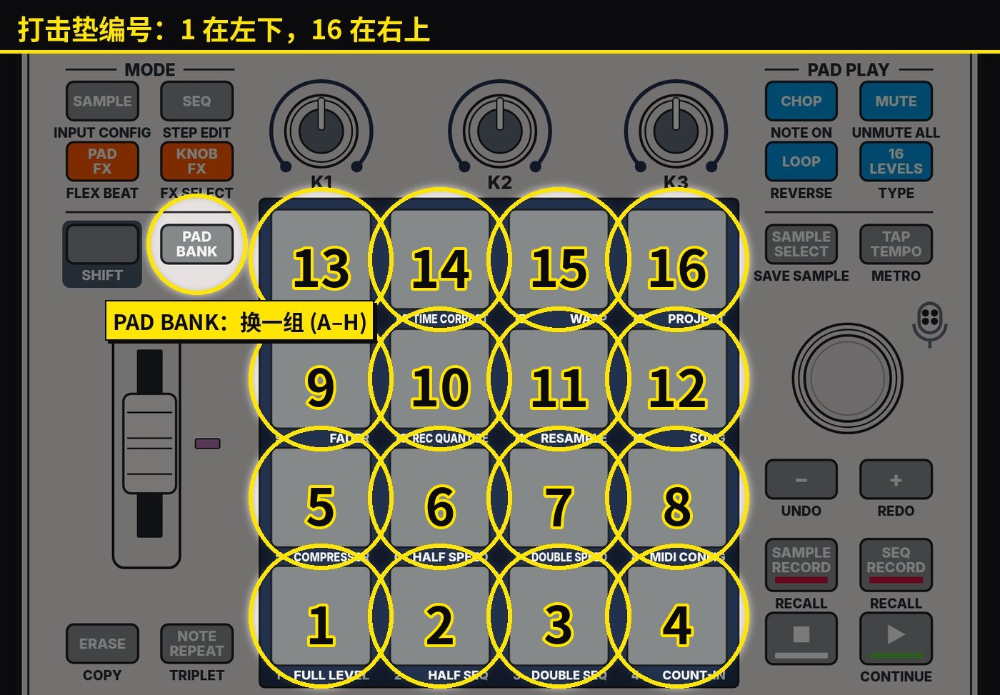
编号： PAD 1 在左下，往右 2、3、4，往上一行行到 13–16（PAD 16 在右上）。和电话键盘相反。
新概念 ⑧ Bank（组）
一共 8 组（A–H），每组 16 个垫，最多 128 个声音。
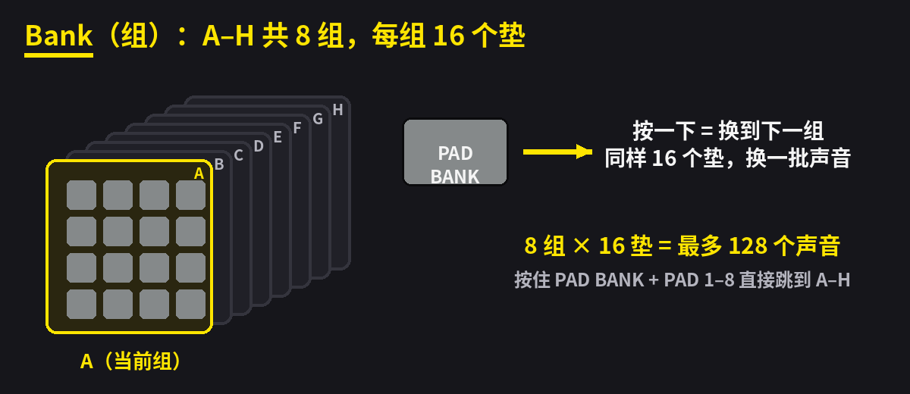
动手 7 · 敲垫、换组
- 目标： 听不同的声音，学会换组。
- 要按什么：
- 按 SAMPLE。
- 从 PAD 1 敲到 PAD 16，轻、重各敲一次。
- 按 PAD BANK，再敲几个垫。
- 直达某组：按住 PAD BANK 再按 PAD 1–8（= A–H）。SHIFT + PAD BANK = 上一组。
- 你会看到： 敲哪个垫就响哪个，屏幕显示它的波形。换组后声音全变。
- 常见错误： 垫闪却没声 → 在 SEQ 模式，按 SAMPLE。轻重一样响 → 开了 SHIFT + PAD 1（FULL LEVEL 满力度）。
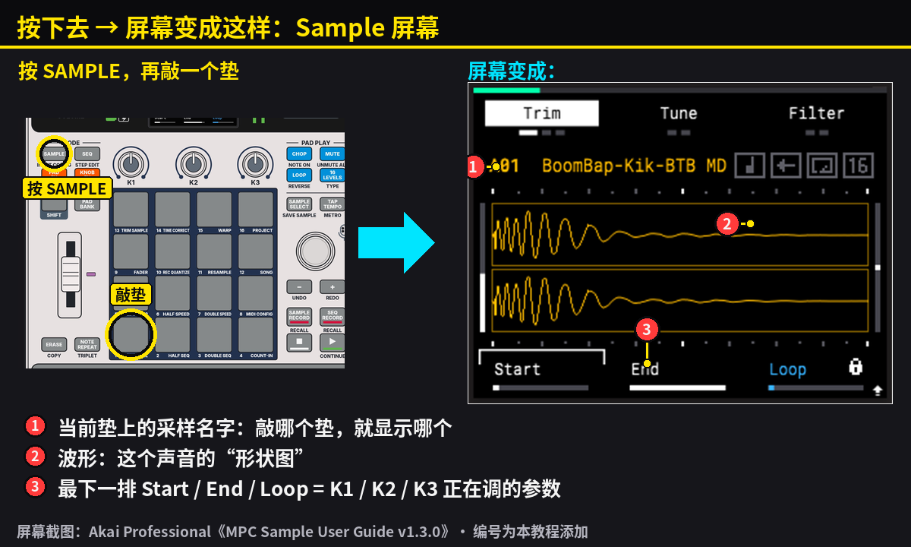
1.7 第一次播放 demo
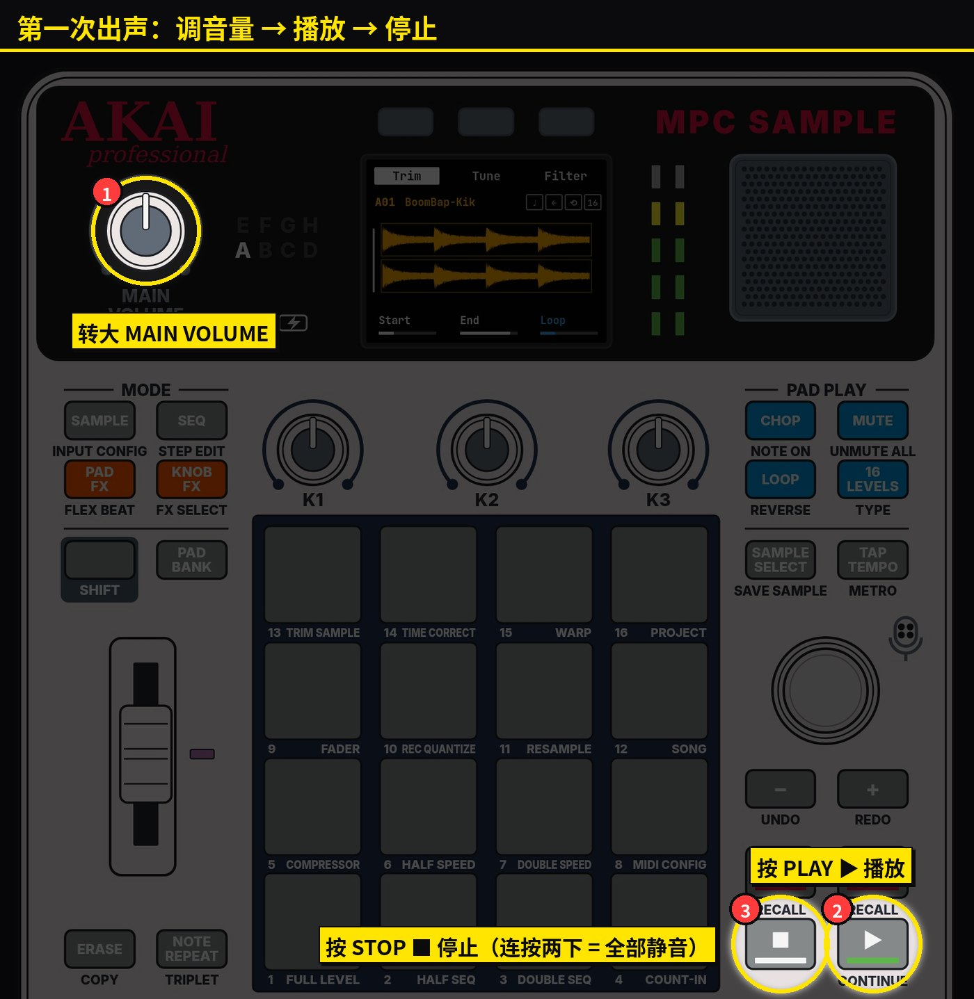
动手 8 · 播放示范工程
- 目标： 听到一段完整的 beat。
- 要按什么： 转大 MAIN VOLUME → PLAY → 听一会儿 → STOP。
- 你会看到： beat 循环播放；哪个声音响，哪个垫就亮一下。
- 常见错误： 没声音 → 见 FAQ。停不下来 → 快速按两下 STOP。
动手 9 · 边放边敲
- 目标： 跟着 beat 敲垫，感受“采样器是乐器”。
- 要按什么： SAMPLE → PLAY → 跟着节奏敲垫 → STOP。
- 你会听到： 你敲的声音叠在 beat 上（只是现场弹，没录下来）。
- 常见错误： 以为敲了就录了——录音见 1.10 节。
1.8 换一个鼓声
新概念 ⑨ 选中的垫 & 采样浏览器
最后敲的垫 = 选中的垫，很多操作都针对它。
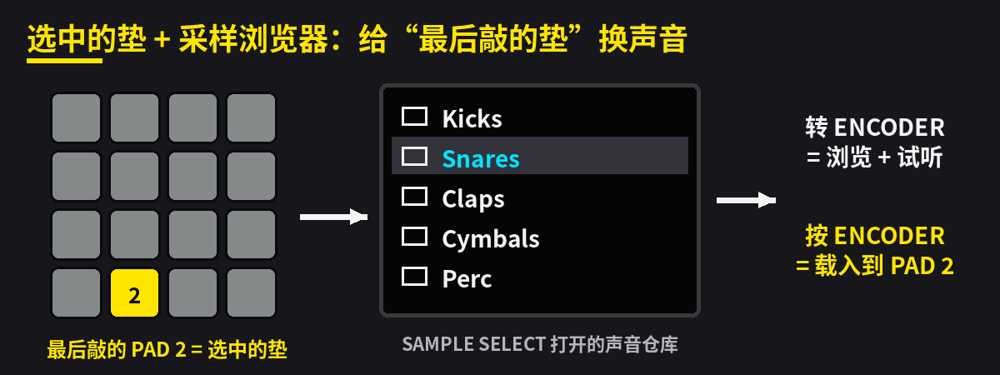
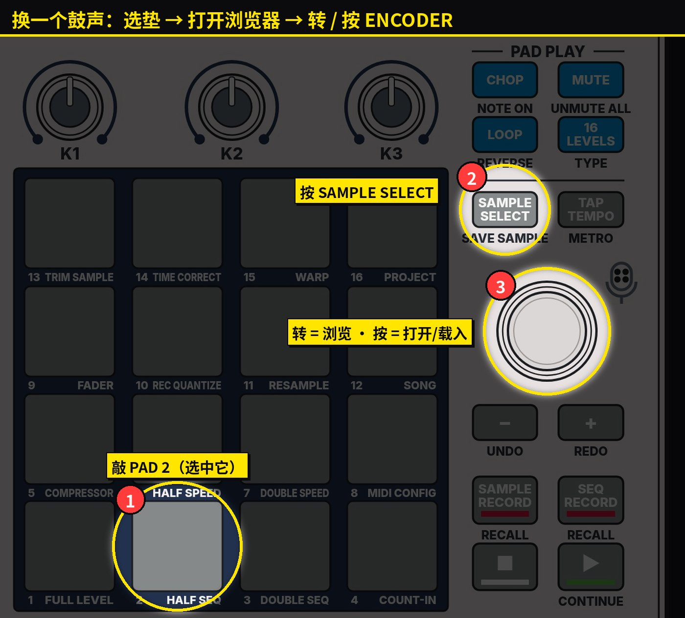
动手 10 · 把 PAD 2 换成另一个军鼓
- 目标： 换掉一个垫上的声音。
- 要按什么：
- SAMPLE 模式下敲 PAD 2（选中它）。
- 按 SAMPLE SELECT。
- 转 ENCODER 到 Snares，按下去打开。
- 转 ENCODER 浏览，每个声音会自动试听。
- 挑中了就按 ENCODER，载入到 PAD 2。
- 再按 SAMPLE SELECT 回去，PLAY 听听变化。
- 你会看到： 文件列表（见 1.4 采样浏览器）；载入后 beat 里的军鼓变了。
- 常见错误： 听不到试听 → 按 B3（Preview）打开。进错文件夹 → B1 返回。换错了 → SHIFT + − 撤销。
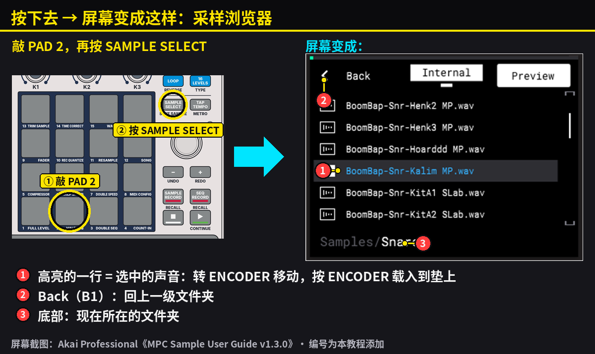
1.9 认识序列：播放与切换
新概念 ⑩ 序列（Sequence）
序列 = 一段录好的节奏：哪个垫、什么时候、多大力度。
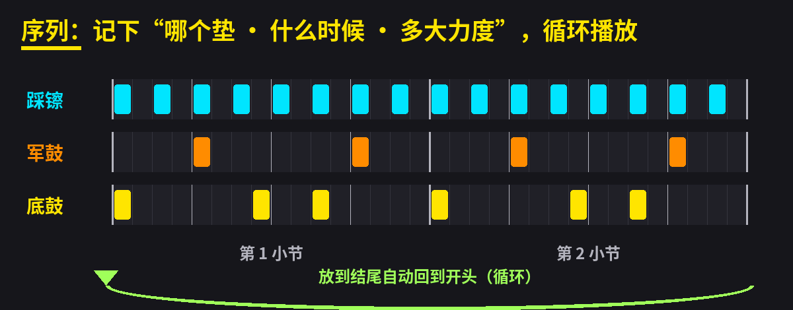
新概念 ⑪ 小节（Bar）与拍（Beat）
最常见是每小节 4 拍：数“1、2、3、4”就是一小节。
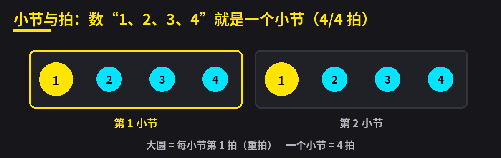
在 SEQ 模式下，一个垫 = 一个序列：
- 浅绿 = 有内容；暗 = 空的；
- 亮绿常亮 = 正在播放；闪烁 = 排队等着播。
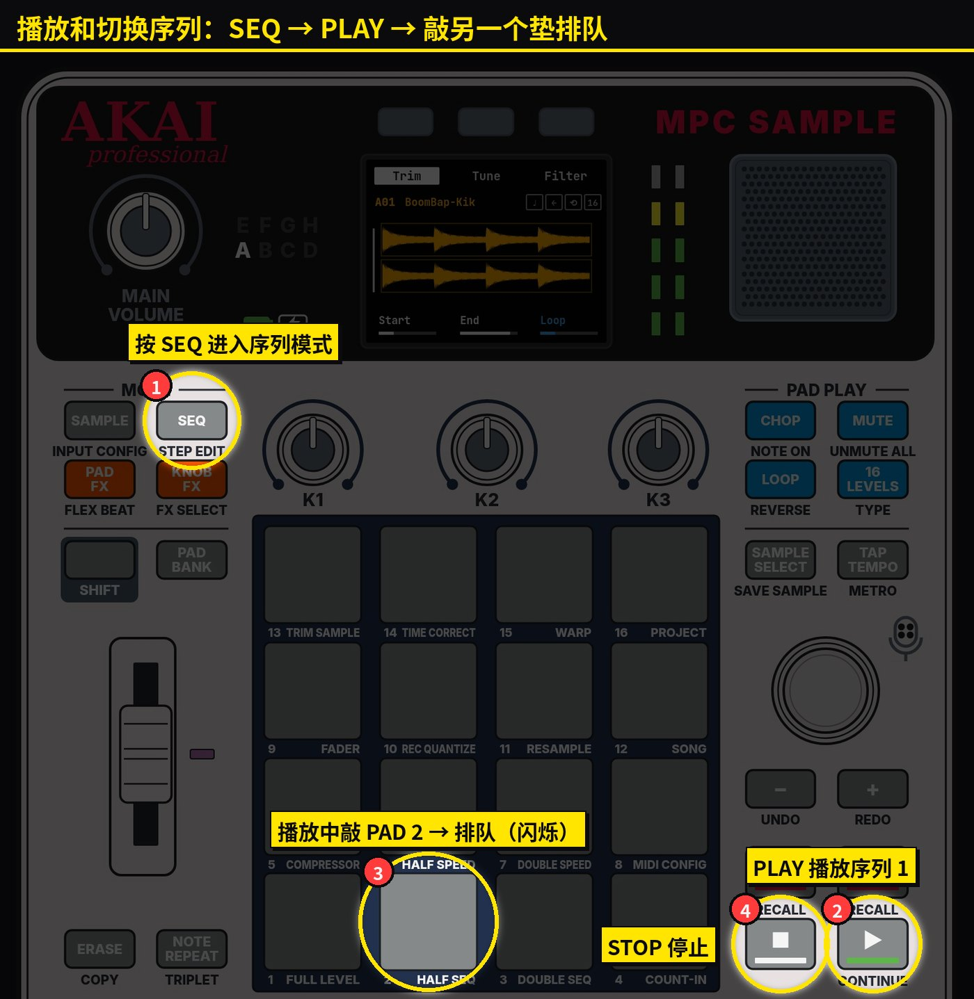
动手 11 · 播放并切换序列
- 目标： 听懂“排队切换”。
- 要按什么： SEQ → PAD 1 选中时按 PLAY → 播放中敲 PAD 2 → 等它切过去 → 再试 PAD 3、PAD 4 → STOP。
- 你会看到： PAD 2 先闪，这段放完后切过去、变常亮；屏幕上的序列名也变（1.4 Seq 屏幕）。
- 常见错误： 以为没反应——它在等这段放完。
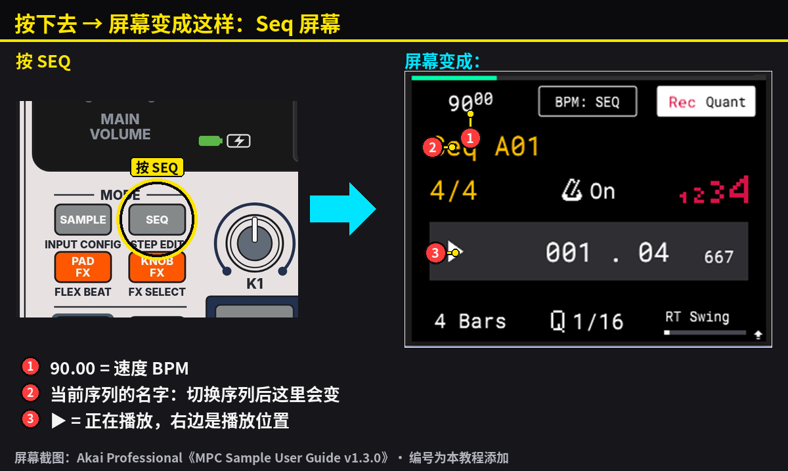
1.10 录第一段 beat（量化、Swing、节拍器、预备拍）
录音前先认识 4 个新概念。
新概念 ⑫ BPM（速度）
BPM = 每分钟多少拍，越大越快。
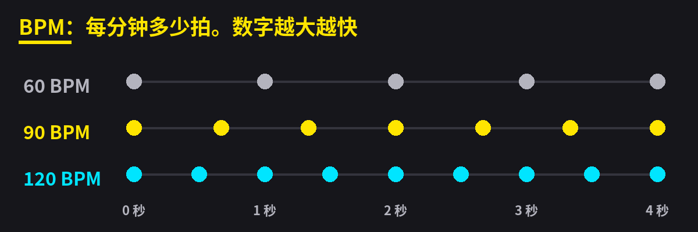
改 BPM 的三种方法：
- SEQ 页：按住 B1 + 转 ENCODER（按 ENCODER 切换整数 / 小数），松开 B1 结束。
- 任何模式：按住 TAP TEMPO + 转 ENCODER。
- 跟着心里的节奏，均匀地连敲 TAP TEMPO。
新概念 ⑬ 量化（Quantize）与 Q 值
手敲不会每下都准。
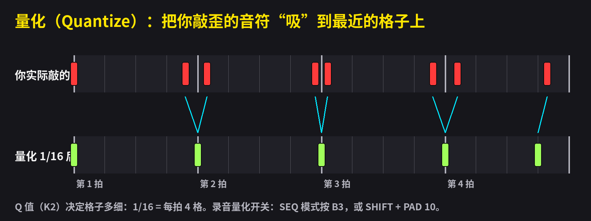
新概念 ⑭ 摇摆（Swing）
全对齐有时太“机械”。
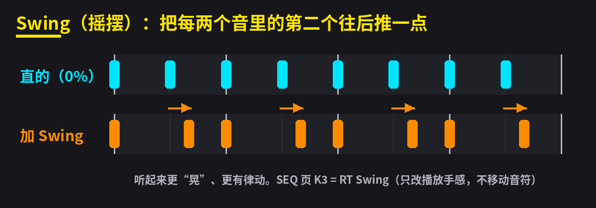
新概念 ⑮ 节拍器（METRO）与预备拍（Count-in）
节拍器 = “嗒、嗒”的提示音。
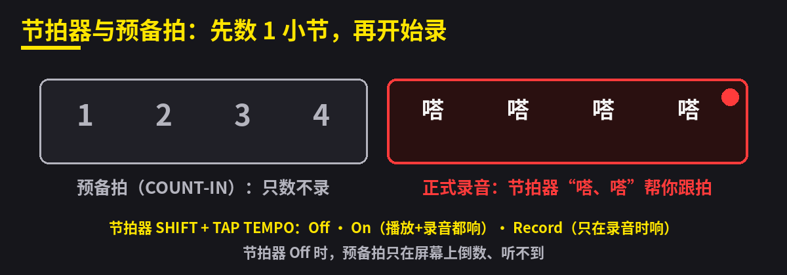
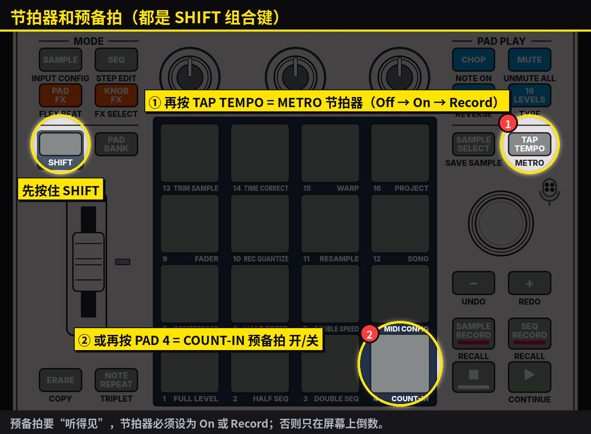
照着编号走一遍：
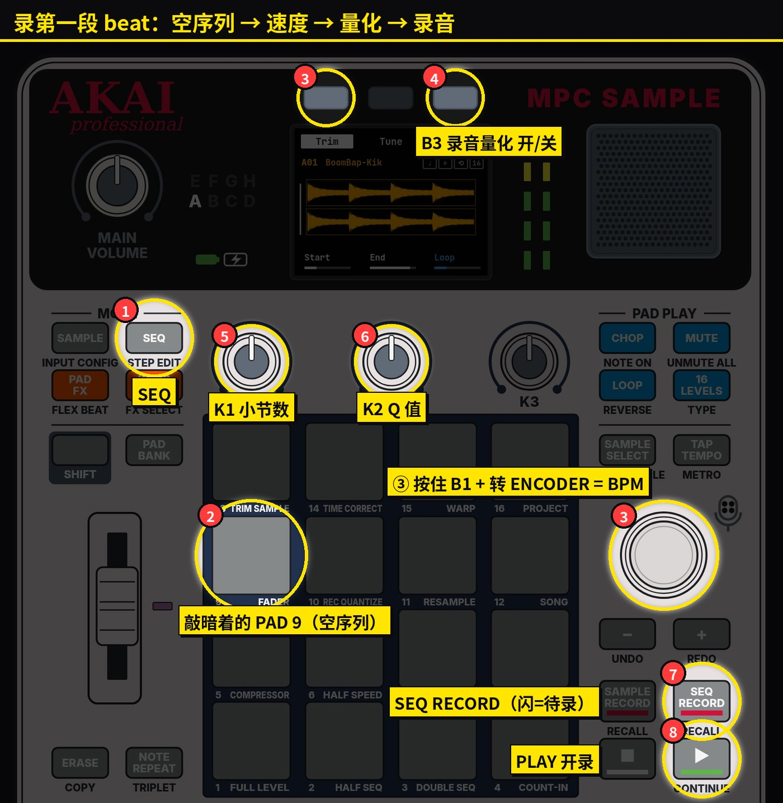
动手 12 · 录 2 小节“动次打次”
- 目标： 录下你的第一段序列：底鼓 + 军鼓。
- 要按什么：
- SEQ，敲一个暗着的垫选空序列（demo 里可用 PAD 9）。
- 按住 B1 + 转 ENCODER，BPM 设到 90 左右，松开 B1。
- B3 打开录音量化（或 SHIFT + PAD 10）；K2 把 Q 设为 1/16。
- K1 把长度设为 2 小节。
- SHIFT + TAP TEMPO，节拍器设为 Record（或 On）；要预备拍就 SHIFT + PAD 4。
- 按 SEQ RECORD：它闪烁（待录），垫自动变回“敲了出声”。
- PLAY 开录：第 1、3 拍敲底鼓，第 2、4 拍敲军鼓。
- 到结尾自动回到开头叠录，可以再加踩镲。
- 按 SEQ RECORD 停录（继续放），或 STOP 全停。
- 你会看到： SAMPLE 和 SEQ 一起闪（垫用来出声，屏幕留在 Seq 页），位置条变红；第二圈听到你敲的音（已对齐）。停下后 PAD 9 变浅绿。
- 常见错误：
- 敲乱了 → SHIFT + − 撤销这次录的所有音。
- 只删一个垫的音 → 录音时按住 ERASE 再按那个垫。
- 没开录却弹得好 → SHIFT + SEQ RECORD（RECALL）找回上一圈。
- SHIFT + PAD 6（HALF SPEED）不改 BPM，只把音符间距拉大一倍。
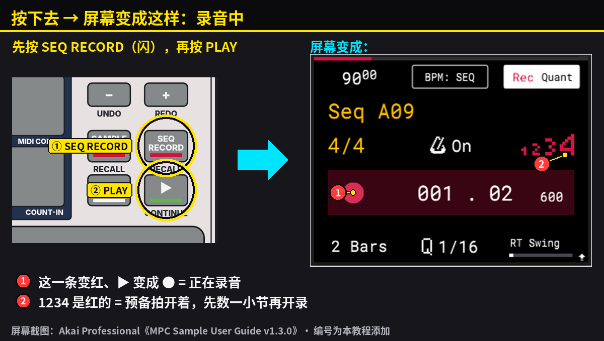
1.11 采第一个声音
新概念 ⑯ 录音来源（Source）
“从哪录”：Mic 内置麦克风 · Rear 后面板 AUDIO IN · USB USB-C 设备 · Resample 机器自己的声音。
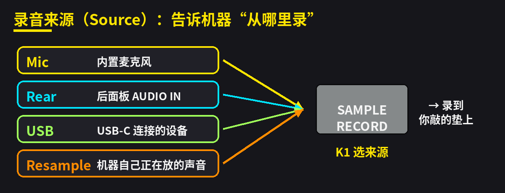
新概念 ⑰ 重采样（Resample）
把机器正在放的整段声音录成一个新采样，放到一个垫上，腾出其他垫。
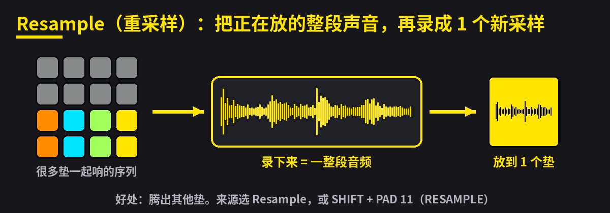
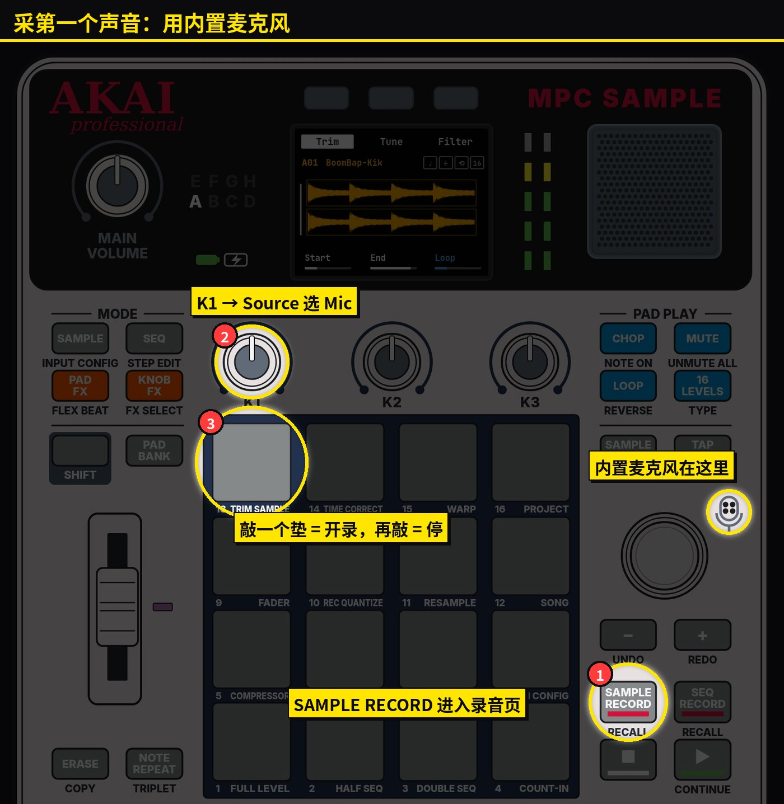
动手 13 · 用内置麦克风录一个声音
- 目标： 把拍手、说话、敲桌子变成一个能敲的垫。
- 要按什么：
- 按 SAMPLE RECORD（屏幕各部分见 1.4 采样录音）。
- K1 把 Source 选成 Mic；K2 保持 Free（不限长度）。
- 敲一个你愿意替换的垫——这一下就开始录。
- 对着麦克风拍手或说话。
- 再敲同一个垫停止（或 STOP；按 SAMPLE RECORD 则直接回采样模式）。
- SAMPLE，敲那个垫听听。
- 你会看到： 电平表跳动，屏幕出现波形。用内置麦克风时喇叭自动静音（防啸叫），想边录边听请插耳机。
- 常见错误：
- 电平表一直红 → 太大声会失真，离远一点。
- 好像没开录 → K3 Threshold 门槛太高，调低（声音超过门槛时右上波形图标会亮）。
- 错过了好声音 → SHIFT + SAMPLE RECORD（RECALL）找回最近约 25 秒（手册正文写 25 秒）。
- 替换了 demo 的声音 → demo 可以重新载入（1.13 节）。
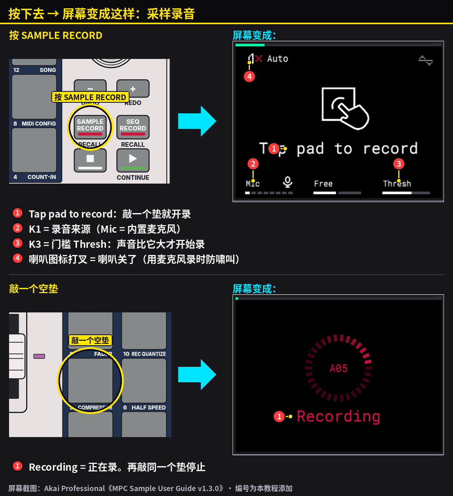
新概念 ⑱ 修剪（Trim）：起点 Start 与终点 End
录音前后常有多余的安静或杂音。
动手 14 · 剪掉首尾多余部分
- 目标： 让采样一敲就响，干净利落。
- 要按什么： SAMPLE → 敲你的采样垫 → K1 调起点、K2 调终点（边调边敲）→ 满意后 SHIFT + PAD 13（TRIM SAMPLE）。
- 你会看到： 起点 / 终点标记移动；TRIM 后两头被删掉。按住 SHIFT 转 K1/K2 可放大波形。
- 常见错误： 下排不是 Start/End → B1 切回 Trim。旋钮不动 → 看箭头。KNOB FX 开着 → 先关掉。
单独存这个声音：SHIFT + SAMPLE SELECT（SAVE SAMPLE），起名同 1.13 节。
1.12 加第一个效果
新概念 ⑲ 效果（FX）
效果 = 实时改变声音的“滤镜”：回声 Delay、混响 Reverb、滤波 Filter、低保真 LoFi……共 4 个效果引擎，先学两个：
动手 15 · PAD FX：按住垫加效果
- 目标： 听效果怎样改变整段 beat。
- 要按什么： PAD FX → PLAY → 按住不同的垫（PAD 10 = LoFi，PAD 15 = Delay，PAD 16 = Reverb）→ 松开就停。
- 你会听到： 压得越重越明显。K1–K3 调参数，B1（Latch）锁住效果（1.4 Pad FX）。
- 常见错误： 这时垫是效果键，敲不出鼓声。按 SAMPLE 回去。
动手 16 · KNOB FX：用旋钮加效果
- 目标： 开关旋钮效果，并换一个效果。
- 要按什么： KNOB FX（键亮 = 开）→ SEQ → PLAY → 转 K1–K3。换效果：SHIFT + KNOB FX → 转 / 按 ENCODER；敲垫选受影响的垫，B2 = 全部垫，B3 = 旁通（1.4 Knob FX）。
- 你会听到： 效果随旋钮实时变化，垫还能切序列。
- 常见错误： 忘了关——KNOB FX 开着时 K1–K3 只管效果。再按一次关掉。
1.13 保存工程
新概念 ⑳ 自动保存 vs 保存工程
自动保存只有“当前这一份”。
动手 17 · 给第一个工程起名并保存
- 目标： 把今天的成果存下来。
- 要按什么：
- SHIFT + PAD 16 打开 Project 菜单。
- 转 ENCODER 选 Save Project，按下确认。
- 起名：转 ENCODER 选字符，按下确认并跳下一个；− + 移动；B2 删字符；按住 SHIFT 输大写。
- B3（Do It!）保存；不存了按 B1（Cancel）。
- 你会看到： 起名页（1.4 起名页）；保存后在 Load Project → User 里。
- 常见错误： 选成 New Project 会清空当前工程（B3 确认、B1 取消）。新建前先保存！ 回到出厂 demo：Load Project → Demos。
1.14 新手常见问题 FAQ
完全没有声音？
① MAIN VOLUME 太小；② 后面插着耳机或音箱线；③ 在 SEQ / PAD FX 模式，按 SAMPLE；④ 垫被静音（MUTE 模式下红 = 静音，SHIFT + MUTE 全部取消）；⑤ 用内置麦克风录音时喇叭会静音。
旋钮 / 推子转了没反应？
旋钮：朝参数名旁的箭头方向转，到箭头消失。
按错了怎么办？
SHIFT + − = 撤销，SHIFT + + = 重做。
声音停不下来？
快速按两下 STOP。
按了 HALF SPEED / DOUBLE SPEED，BPM 怎么没变？
它们改的是音符间距（1/8 变 1/4 或 1/16），不改 BPM。
开了预备拍却听不到“1、2、3、4”？
节拍器要设成 On 或 Record（SHIFT + TAP TEMPO）。
16 LEVELS 按了没反应？
它（把一个声音铺满 16 个垫，按力度 / 滤波 / 音高逐级变）只在 SAMPLE 模式可用。
按键的灯是什么意思？
亮 = 正在用，暗亮 = 可用，灭 = 现在不能用。
屏幕上的小箭头 ⇧ 是什么？
按住 SHIFT 时 K1–K3 或 B1–B3 还有另一组功能（1.4）。
开着机充不进电？
可能只在关机时充电。
为什么找不到 Program / Track？
那是大型 MPC 的概念，MPC Sample 没有。
microSD 卡插在哪？怎么和电脑互传？
卡槽在机身左侧。
1.15 本章小结 / 自查清单
你已经学会 20 个新概念： 采样 · 采样器 · 工程 · 功能键 B1–B3 · 模式 · 绝对位置旋钮 · 第二功能 · Bank · 选中的垫与采样浏览器 · 序列 · 小节与拍 · BPM · 量化与 Q 值 · Swing · 节拍器与预备拍 · 录音来源 · 重采样 · 修剪 · 效果 · 自动保存与保存工程。
自查清单（做不到就点链接回去练）：
- 开机、调音量、播放和停止 demo（1.7）
- 说出 5 个区各管什么（1.3）
- 指出 Sample 页和 Seq 页上的 BPM、序列名、K1–K3 参数在哪（1.4）
- 用 SHIFT 打开工程菜单再退出（1.5）
- 找到 PAD 1 和 PAD 16，切到 Bank C（1.6）
- 把一个垫换成别的军鼓（1.8）
- 在 SEQ 模式下让序列 1 播完后切到序列 2（1.9）
- 设 BPM、开录音量化和节拍器，录 2 小节 beat，并撤销一次（1.10）
- 用内置麦克风录一个声音并修剪干净（1.11）
- 用 PAD FX 和 KNOB FX 各加一次效果，并关掉 KNOB FX（1.12）
- 给工程起名保存，再从 Load Project → User 找到它（1.13）
全部打勾？你已经能独立做出第一段 beat 了。 第三章深入鼓组和写 beat 的七步。
本章速查： 所有按键、编号 1–40、各模式全部参数 → 第一章附录 · 功能速查。
推荐视频
全章视频都放在这里，看完步骤再回来看。
中文导览短片（原创）
4 分钟导览短片（原创，中文字幕）：面板 5 个区，以及每按一个键屏幕会变成什么。
🎬 原创短片：面板 5 区 + 按键后的屏幕（4 分钟，1080p，下载 mp4）
英文视频（YouTube）
① 在 MPC Sample 上做第一个 beat（Ave Mcree）
② 手指打鼓第一课（Jeremy Ellis）
③ Exile 用 MPC2000XL 现场做 beat「In Love」
④ Akai 官方：MPC Sample 整机概览
⑤ Akai 官方入门：导航与声音
⑥ Akai 官方入门：做一段 Hip Hop beat
⑦ Akai 官方入门：从黑胶采样
资料
- User Guide v1.3.0 PDF（本章按键组合、屏幕截图均出自此版手册）
- 在线用户指南 · Tutorial 章
- 产品页 · Academy 视频
- Akai Professional YouTube 频道
- 官方 FAQ
- 下载 · 固件
图片说明：本章面板图是依据官方手册顶面示意图、用代码绘制的示意插画（不是实物照片）；“小屏幕”一节的屏幕截图来自 Akai Professional《MPC Sample User Guide v1.3.0》，编号为本教程添加。